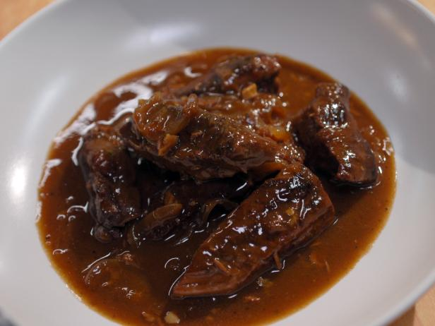

Page Title
Beef in Beer

Ingredients
- 500g of cheap beef pieces(stewing steak is usually cheap)
- 500 mls of real ale
- 4 large onions
- 2 fat cloves of garlic
- tbsp of plain flour
Method
- Raw beef, roll it in the flour, fry 4-5 pieces at a time in a hot saucepan to seal, put to one side when all done
- Cut the onions into quarters, fry in the same frying pan as the beef, to soak up the juices.
- Towards the end of frying the onion(they should be nicely brown round the edges)throw in the smashed up cloves of garlic.
- Transfer the beef,onions,garlic to a deep casserole dish. Stir in the remaining flour
- Pour on the bottle of beer
- Cover and cook at 150 for about 2 and a half hours.
Back